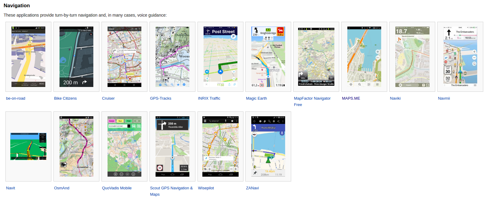
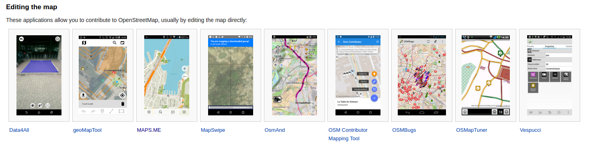
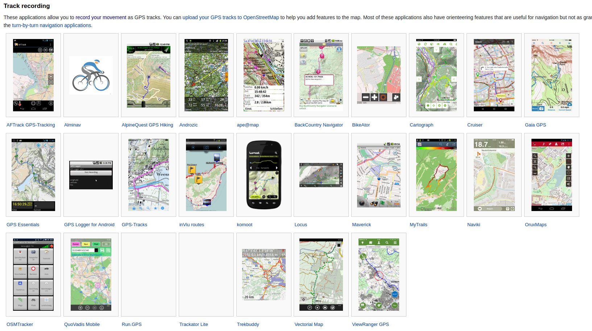
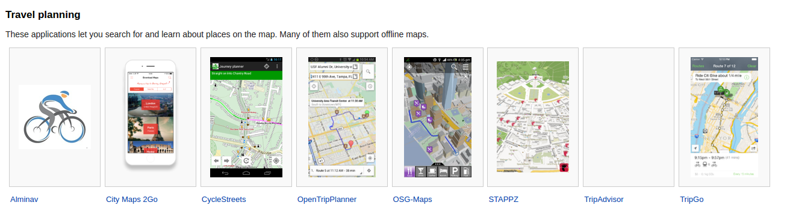
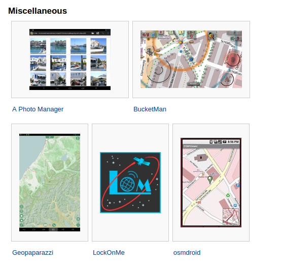

#mobileapps
13. Aplicaciones para dispositivos móviles¶
Hay diferentes tipos de aplicaciones para dispositivos móviles que utilizan mapas de OpenStreetMap. Existen aplicaciones del tipo navegador, para editar el mapa, para grabar las trazas GPS, de realidad aumentada, para planificación de viajes y otras.
Puedes echar un vistazo a algunas de esas aplicaciones en el siguiente enlace:
Aplicaciones para dispositivos móviles
    {kind=link}
{kind=link}
{kind=link}
{kind=link}
{kind=link}
El problema de las baterías: si se lleva una aplicación de tracking continuamente activada en el móvil, la batería dura muy poco. Es conveniente activar la opción de tomas de puntos cada cierto tiempo, si la aplicación lo permite, y llevar baterías portátiles o cargadores solares para recarga de los dispositivos.
13.1. OSM AND¶
Es una de las aplicaciones más completas que hay actualmente. Está disponible para Android e iOS
Funciones de navegador inteligente, grabado de trazas GPS, toma de notas de audio/foto/vídeo para cualquier posición del mapa.
Permite elegir el intervalo entre puntos grabados.